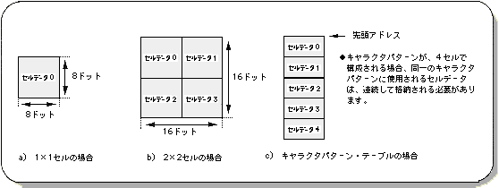
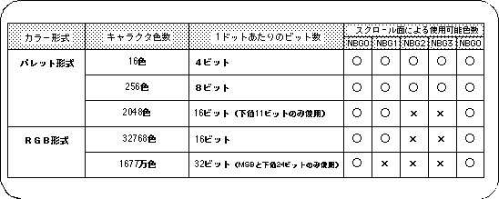
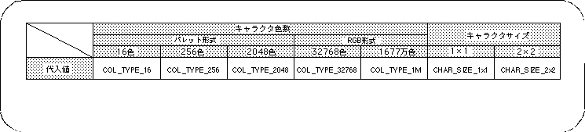

Return to previous page | Return to menu | Go to next page
A character pattern is a square pattern composed of 1x1 cells or 2x2 cells, and stores information in dot units (information such as the drawing color of dots). In SGL, the character pattern information cluster (data table) is stored in the VRAM as character pattern data for access and use.
At this stage, SGL specifies the number of character colors for each scroll plane.
When one character consists of 4 cells, the cell data used for the same character pattern must be stored continuously in the character pattern table.


Note) In color RAM mode 0 and 2, 1024 colors will be 1024 colors.
Use the library functions “slCharNbg0 to 3” and “slCharRbg0” to determine the number of character colors and character size in SGL.

Note 1) When color RAM mode is 0 or 2, 2048 colors will be 1024 colors.
Note 2) The values in the above table are defined in “sl_def.h” included with the system.